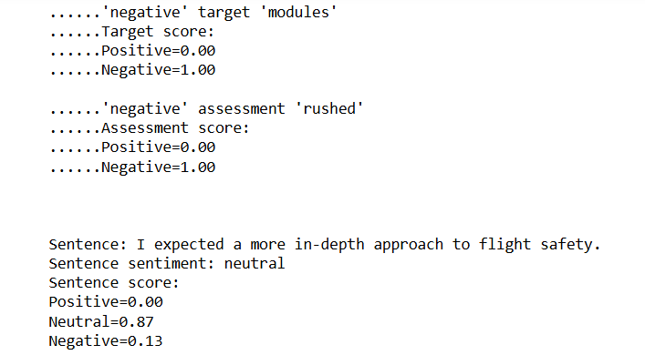
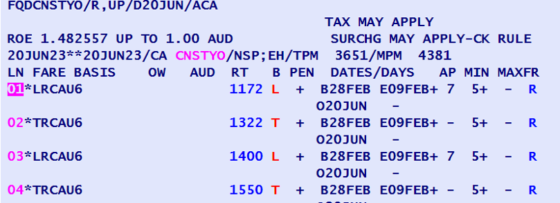
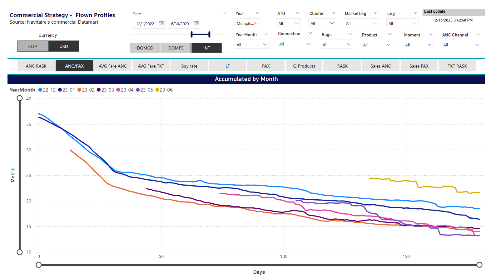
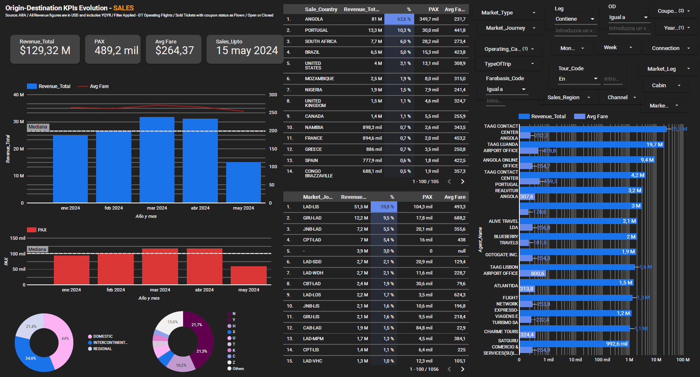
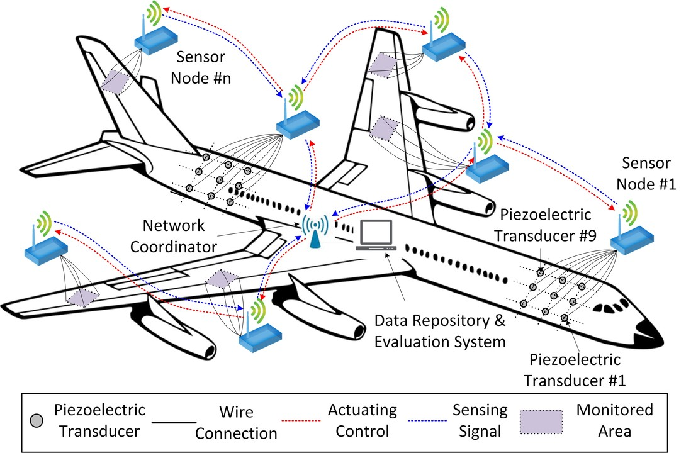

This dashboard integrates data from Cirium to extract and display Middle East Airlines' flight schedules in real time. It offers
interactive visualizations, allowing users to view departures, arrivals, and delays with ease.
The tool provides detailed filtering and analysis options, enabling stakeholders to monitor schedule trends,
optimize operations, and improve customer service by quickly accessing up-to-date flight information.

This project harnesses sentiment analysis techniques to evaluate feedback from flight crew training sessions.
It processes and analyzes textual comments to identify prevailing sentiments—positive, neutral, or negative—allowing training
coordinators to pinpoint strengths and areas for improvement. By automating the assessment of feedback, the project helps streamline
quality assurance in training programs, ensuring that flight crews receive the support they need to excel.

This Python script uses the Amadeus API to fetch round-trip flight offers based on specified routes, dates, and passenger counts.
It retrieves raw flight data, then parses each flights itinerary segments (including departure and arrival airports, t
imes, layover durations, cabin class, and booking class). The total price and currency details are also extracted.
Finally, the program saves all this structured information in a JSON file for easy reference and further analysis.

This project aims to develop a Business Intelligence
framework for dynamic pricing analytics in ancillary revenue.
Utilizing statistical models, the project analyzes price variations
and applies pricing rules to optimize revenue. By assessing price
elasticity, the framework enables precise adjustments based on
demand fluctuations, enhancing profitability and customer
satisfaction. The integration of advanced analytics ensures
data-driven
decisions, supporting the airline's commercial strategy.

This Python code calculates and visualizes optimal airline routes from a hub airport (NBJ) using the Haversine formula
to measure distances between coordinates. It defines a dictionary
of airports with coordinates and names, computes direct and
connecting routes from the hub, and benchmarks multiple
hubs for route efficiency. The code includes functions to
print and plot the most feasible routes, enhancing route
planning and operational decisions for the airline.
The potential for this code lies in optimizing route networks,
reducing travel distances, and improving overall efficiency
in airline operations.

Recognizing the need for a cohesive business intelligence
strategy, we integrated all commercial analyses,
including ancillary revenue, revenue management,
network planning, sales, and marketing, into a unified commercial datamart.
This initiative streamlined data insights
and enhanced decision-making across the commercial sector.

This project developed a Business Intelligence scheme for an African airline commercial strategy using Google Cloud Platform and BigQuery.
The goal was to enhance data-driven decision-making by integrating various data sources
for comprehensive analytics. BigQuery's capabilities enabled
the commercial team to gain actionable insights, optimizing
marketing strategies and improving operational efficiency.(Disclaimer, data show corresponds only to a sample due confidentiality)

Python program that simulates a basic Structural Health Monitoring (SHM) system for a Boeing 787. The code demonstrates:
- Data Acquisition (synthetic data generation with normal and anomalous conditions)
- Data Processing (noise filtering, normalization)
- Feature Extraction (statistical features and FFT)
- Anomaly Detection (One-Class SVM model)
- Visualization (matplotlib plots)
- Reporting (summary of detected anomalies)